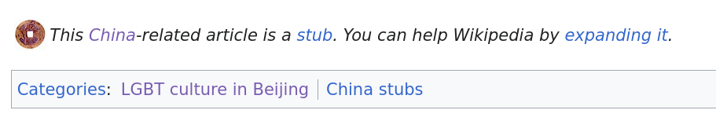

1: 19 October 2023
"This China-related article is a stub. You can help Wikipedia by expanding it."
Today I finished updating my resume for my grant application to travel to Beijing. I’ve been back there to visit my extended family about 4 times in my life. The last time I was there was the summer of 2018. That was before COVID severely complicated my gender and the process of flying to China all at once.
I’m going back soon, in January of 2024. In the meantime, my grandfather, my mom’s dad, passed away. I want to see my other grandparents before it’s too late. I love them, but I’m not as connected with them as I should be. I know they love me. But it’s so hard to feel it when they’re overseas and I barely speak their language.
I’ve had a few years to think about what means to be queer and Chinese without being in China. I’ve always been queer in China but I’d never known it. I’d always felt out of place in China, but never for this reason. Being out and being in China have never overlapped. I’m also an adult now. I have new knowledge and agency now and I realized that maybe I could use that to make something of this trip.
I don’t really like thinking of China as a homophobic wasteland. I know China is socially conservative compared to California but America likes to play up the bigotry of other countries and give itself too much credit. I have to remind myself of two things.
- The United States is not always a queer utopia either, and
- Socially conservative government policies don’t mean that actual queer people, on the ground, don’t have spaces where they live their lives
I’m going to girlmode for a month while I’m there. Even if societal views towards queer people aren’t as bad there as they’re made out to be, I still don’t plan to come out to my extended family. I’m not thrilled about it, but I want to see my family again and I’m determined to make the experience a little easier for myself.
Full of hope, I did a preliminary Google Search for “queer culture in china”. The first link was Wikipedia. It was a stub article. It had three sources, dating back to 2015 and 2017. One of them didn’t work. The others led to paywalled articles, one from Condè Nast titled “An LGBT-Friendly Guide to Beijing”. I do not trust Condè Nast.
Some other articles about gay bars. The drinking age in China is apparently 18, but I don’t enjoy bar environments and I’d rather stay mostly sober if I’m going to be out alone in a country where I’m totally illiterate and barely conversational to begin with. I’m not going to ask any of my family members to go to a gay bar with me. I might visit one and check out the vibes.
One of the related Wikipedia articles is about the Beijing LGBT Center. That excited me. I went to the page only to read that the center, which was a safe space, resource center, and advocacy group for queer people, had shuttered in May 2023. Five months ago. It had been going for 15 years. It had been going when I did my Winter Term project last January. ShanghaiPRIDE, the organization responsible for many queer events in the area, had also closed down since 2020. Both were probably due to government pressure. I was feeling a bit demoralized.
I kept going. I read the Wikipedia articles about the Beijing Queer Chorus, although it didn’t have any information about the group’s activity since 2018. I read about the Beijing Queer Film Festival. Many of these Wikipedia articles have grammatical errors, awkward phrasing. Last fall (a year, a week, and two days ago exactly) I overhauled the article about the film Red Sorghum to be grammatically correct after watching it for my first-year seminar on gender and sexuality in China. I didn’t bother fixing these ones now, because they make me happy. They’re evidence that people living in China, who were involved with or supportive of those queer organizations, wrote these semi-obscure articles. Some gay nerd who was a fan of choral music or cinema put in the effort to create those articles in their non-native language, because they thought the subject matter was important.
The first Wikipedia page, the one called “LGBT culture in Beijing”, also had this image:

So yeah, I’m angry that the Beijing LGBT Center, ShanghaiPRIDE, and many other groups have been forced to shut down, at least for now. But I’ll have to wait until I actually have my feet on the ground to see for myself. I’m pretty visibly queer these days. Even if I try my absolute hardest to girlmode (which I won’t), I think I’d still ping gaydar. Previously it could have been written off as the awkward mannerisms of a child or preteen with no social skills or sense of fashion, but I think that cover has expired. So I’ll keep my eyes open and hope I find something, or hope something finds me.
 Wikipedia: LGBT culture in Beijing2: 21 December 2023
"hé wǒ zài chéngdū de jiētóu zǒu yī zǒu"
There are approximately one and a half days before I fly overseas. To put things shortly, I do not feel prepared!
I made up a lot of BS on my Winter Term application to get it accepted, including that I would be "practicing my instruments" which I have not been. Today after the last of the remaining people who I knew left campus, I had nothing to do so I figured I would actually try to stick to the plan a bit and practice playing my bari uke.
A song that I've had stuck in and out of my head for the past few weeks is Chengdu by Zhao Lei. I can't remember when I first heard it, but listening to it triggers something nostalgic in me, so it was probably when I was quite young. When I listen to people speaking (or singing) Mandarin above a very basic level, I can't understand most of it. I can distinguish between the tones, and they sound like words and not gibberish, I just don't know the meaning of most of the words and phrases. In Chengdu, I could understand the first line of the chorus, as it was pretty simple- "Walk with me through the streets of Chengdu". The rest of the song's lyrics were always more muddled for me when I listened.
A friend of mine mentioned seeing a list of the Gayest Cities in China. When I looked it up, I found that Chengdu was commonly considered to be #1 in that respect. I have no idea if the songwriter of Chengdu, Zhao Lei, is gay in any way, but the song (like most generic love songs) can be interpreted to be about gay yearning, so I choose to do so.
I decided to learn to play Chengdu as practice, and also maybe to show off and impress my relatives in China. The chords were available online and fairly standard. I was also able to find a pinyin transcription of the lyrics, so I could learn them.
Pinyin is an interesting system. Because I can pronounce tones, and I know which sounds the tone markers and English letters correspond to, I can read pinyin and sound like a native speaker saying the words, but I don't actually understand what most of them say. As I practiced singing and memorizing the lyrics to Chengdu, I had a sense of the uncanny valley feeling. On the surface, I could pronounce the words quite well, but I had only the vaguest idea what I was singing about. This lack of understanding also severely hindered my ability to memorize the words. Without actually comprehending what I was singing, I was just trying to memorize a seemingly random order of syllables with brute force.
The more I closely listened to the words though, the more I realized I understood more than I thought. The melody had obscured some of the tones, making them harder to understand, but speaking them out loud, I realized I was saying intelligible sentences. Looking up an English translation helped further. After doing this more careful practice, I realized that maybe 75% of the song was made up of words that I was able to understand all along.
The song describes the rainy, willowy city of Chengdu where the singer's lover remains, separated from the singer. In my seasonal depression brought on by winter in Ohio, it painted a tantalizing image in my mind. Unfortunately, I will be in Beijing, which is quite far from Chengdu and even colder than Ohio at this time. Out of curiosity, I did look up the weather in Chengdu, which at around 45-60 F highs is much balmier than Beijing's highs of 25-30 F.
I've been quite homesick for Davis, which is strange because I've never really been homesick before. I wish I were going somewhere sunnier and warmer, and I am nervous to be in cold Beijing for a month. I wish I could go for a walk down the partially cloudy, 49 F streets of Chengdu with all of my friends.
Zhao Lei - Chengdu3: 25 December 2023
"Closed on Mondays"
Merry Christmas! I landed in Taipei early Christmas morning for a 10-hour layover. Getting to explore the city was a lot of fun and I can't wait to do it again on my return flight, although I will have a shorter layover.
I wanted to include pictures I took in this blog post, but I haven't yet figured out how to get a VPN on my laptop from behind the Great Firewall, so transferring the images from my phone is tricky. I'll just do my best to describe and maybe add them later.
At the Taoyuan Airport, I ran into a friend and fellow queer Asian Obie! This was an insane coincidence, given that we were on separate planes (I got lost in the airport for about 3 hours, and that's the only reason we ran into each other). After going through immigration, we went our separate ways.
In Taipei, I saw lots of cool birds that don't exist in Ohio or Norcal. I also saw some sparrows that looked very familiar. North America is overrun by invasive House Sparrows that were introduced from Eurasia, and these sparrows looked a lot like those except they were probably native. I don't know that much about Taiwanese birds. I started out walking mostly randomly. I happened across MOCA, an art museum. It was closed, and apparently it is closed every Monday.
In the spirit of this blog's theme, I went looking for gay. Unfortunately, I am an American who is not at all familiar with what gay culture looks like outside of the West. I did see some signs and accessories with rainbows on them, but they could have just been rainbows.
I wanted to visit the National Library and look for queer literature, but it was closed. Maybe it was Christmas, or maybe it was a Monday. Across the street was the Memorial to Chiang Kai-shek, and the National Theater and National Concert Hall, which were all open. The National Theater contained a small cafe-bookshop, which I browsed through in lieu of the library. Most of the books were film or theater related, but I did find copies of The Picture of Dorian Gray (by Oscar Wilde), Selected Works of Oscar Wilde, Gender Troubles (by Judith Butler), and Histoire de la Sexualitè (by Michel Foucault). I wasn't surprised per se to find them, but it was a very small bookshop that had a strong focus on theater, so it was a little unexpected. These are all books written in English (or French) translated into Chinese. I wish I could read Hanzi, so I could spot gay books originally written in Chinese. One book did catch my eye because of its prominently displayed "18+" sticker as well as the use of the bottom emoji (you know the one) in the subtitle. When I have more energy I'll properly look into it, but for now, the Google Translate version of its title is "Until night gentle: can you treat me like a normal person?" Some partially English fine print advertises a "Sex Chat Podcast". I definitely intend to do more research on this book and its author (authors?), but probably when I have a better internet connection. The bookstore also had a translated book by Jordan Peterson.
The National Concert Hall had a gender-neutral bathroom. I didn't take a photo (that would have been weird) but I did use it even though I didn't really have to, just because. It felt notable because it was the only bathroom in that area of the building, and it wasn't just a single-stall room, it was a normal public bathroom with multiple stalls shared by all genders. That puts it above the Cleveland Airport in terms of gendered bathrooms. Probably also the Seattle Airport as well, whose only gender-neutral bathrooms I could find were the big family bathrooms.
I'm actually writing this blog post on December 28, so I've had several days to think about how to write it. I had some poetic meaningful stuff in mind but I'm tired and still slightly jetlagged so I just tried to put down the important things that happened. Maybe I'll write a better blog post about my layover in Taipei on the way back.